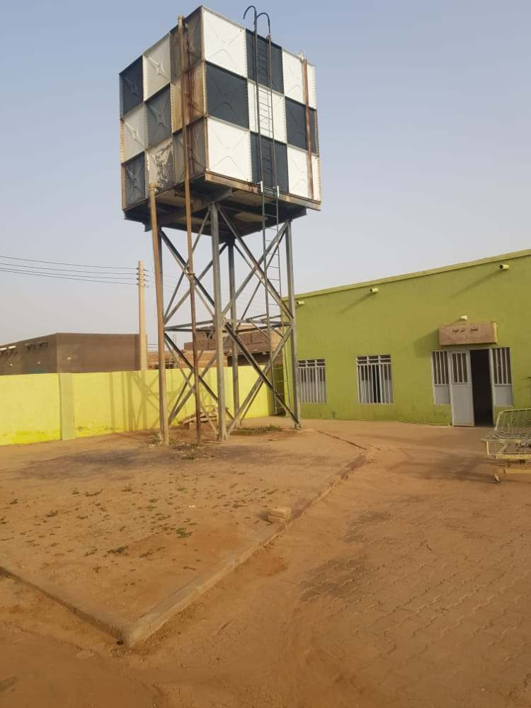

We focus most of our time and resources on goals that would provide immediate improvement to health outcomes in Sudan. However, we also keep an eye towards long-term initiatives that would prove beneficial in the future.
Completed – Renovation restrooms in Obstetrics division at Shendi Teaching Hospital
Completed – Renovation of public restrooms, over 30 restrooms total at Shendi Teaching Hospital
Ongoing - Donation of health and hygiene materials and supplies
Ongoing - Renting small vans to transport patients from remote areas to larger treatment facilities
Future - development of wet nurse/doula training program
Future - building small primary care clinics for basic treatment in remote areas of River Nile State.
There are many barriers to meeting education goals and yet we understand the importance of educating the children of Sudan and the world. We concentrate our efforts on ensuring that the necessary infrastructure is available and ready to accommodate the rapidly growing youth population.


Completed – built two basic school buildings for class instruction complete with running power in the Shendi area.
Completed – built an additional bathroom on school grounds for student use in Shendi area.
Ongoing - Building initial classrooms and infrastructure for Dar El-Naim Elementary School for Girls
The importance of clean drinking water cannot be overstated. Not only is it necessary for basic sustenance but reliable access to clean water improves health outcomes and allows communities to flourish.
Completed – Built water pump and desalination apparatus, serving over 12,000 residents in and around El-Misaktab area
Completed – Financed a water well in River Nile State, serving 2,500 residents
In addition to providing some meals, we are helping to improve and build up the logistics of delivering these meals to communities in need.
Ongoing – Distribute wheat to families and communities in need, 500+ individuals
Ongoing – Distribute food kits that include staple and pantry goods for over 500 families during the month of Ramadan.